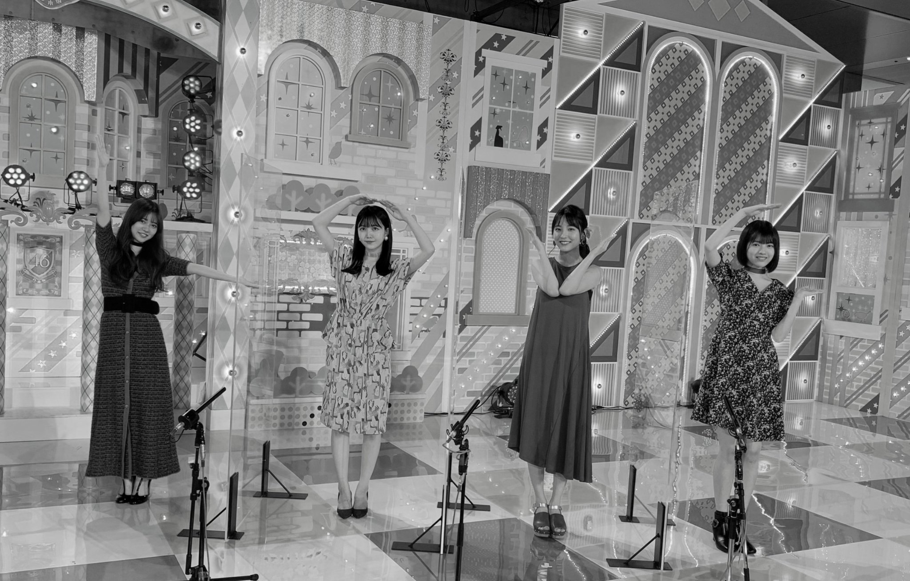
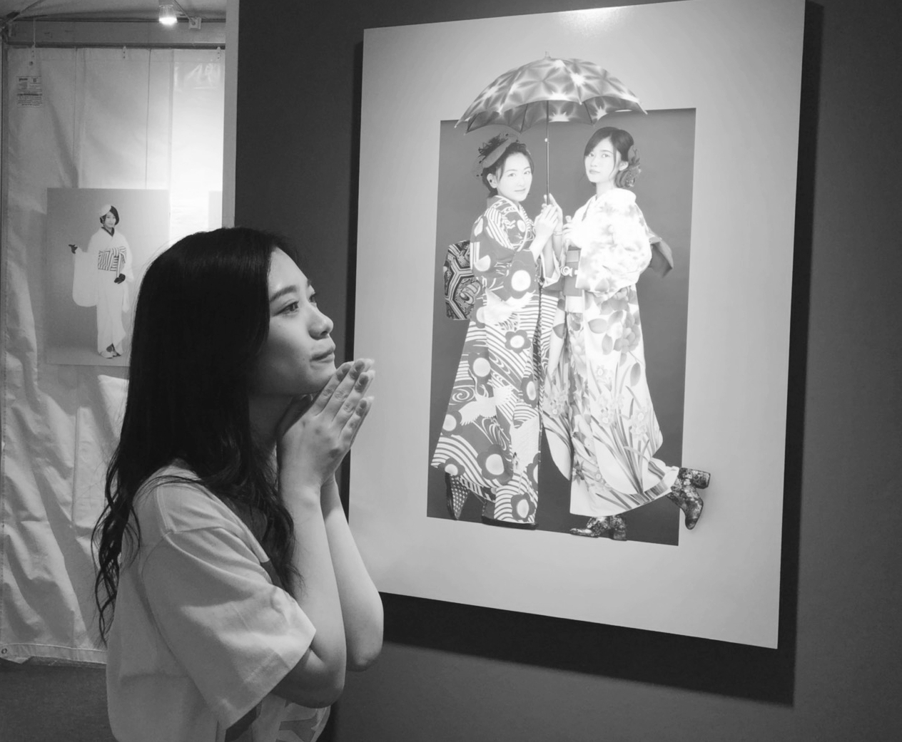
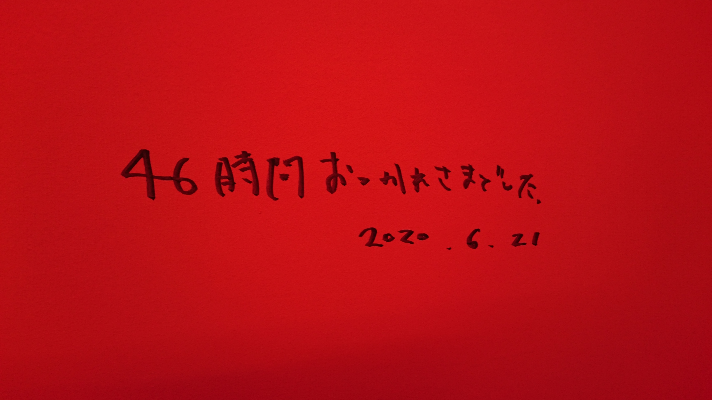

2020/0625ThuTHIS IS IT
パジャマー。☺️
楽しんでるよって言うのを身体から髪型から出していこうって

楽しんでもらえてたなら何よりです。
私自身
今回テーマとして
先輩とは思い出を後輩には手を差し伸べられるようにと言ったので
電視台含めてそのような企画を作れたこと
それを披露できる場所があることを嬉しく思います。
初めから参加させてもらってる
2期生として
沢山の方に見てもらえる場所が
すぐにある事の有り難さは凄く感じています。
私の電視台2020年はいかがでしたか。☺️
本当に私物のみだったので
骨格から似合いそうな子を選ばせて貰いました。
それと、何となく似たものを感じるかも、、、なんて思ったり。
綺麗に着こなしてくれると期待してたけど想像よりもいいものが出来ました。
私も満足満足満足でしたし
メンバーからも好評で嬉しかった。☺️
あの、みんなが皆を褒め合える乃木坂46が好きだから、嬉しかった。
何日も前から準備していたから
その見えない時間も込みで
とても、いい経験になりました。
みんなありがとう。
とても楽しかったし私はずっとファッション関係で働きたかったので
自分で何日も前からコーデの準備
とても学ぶことがありました。
フィッティングするとか
アクセサリーまで自分で考えたり
その子に合うものを考えながらも
新しい一面を引き出したいから
私になりに考えたりと。
今の私にはここまでの事が出来るのかと普段の活動では知れない自分を知ることが出来ました。
今はアイドルやらせてもらってますが、枠にはまらずに
電視台という企画を通して
メンバーに沢山の可能性や才能を個性を発見できる素敵な場所だと46時間TVを通して感じました。
これを機にファッションについて
趣味だけに止めずに
お仕事として私は向き合いたいです。
皆様お力添え宜しくお願い致します。

2020
皆でlove
これからも宜しくねー。☺️

昔の46時間TV
大好きな先輩。☺️
昨日は、うたプリ10周年記念日でした。
私が初めて好きになったアニメです。
一十木音也くんに出逢って10年。
時の流れは恐ろしいものです。
オーディションの頃から
私の支えでした。
そして、今日は
ずっと尊敬
言葉では表せない人に向けたものです。
表現者としてステージに立つ人として全てがスマートで夢がある人。
人として深みがあって
幼いながらに魅力を感じで
今でもずっとずっと私に良いインスピレーションをくれる人です。
歌って凄いなって
目に見えない存在になっても
沢山の人の心を動かし続けている人。
私も目に見えない存在になっても
そんな人でありたいです。
誰かの心の中で生きていたいです。
とりあえず、最近はふとした瞬間も
なにか映画を見てても
誰かの発言を聞いても
私は今までの出来事や出逢いが
大切な宝物だと感じます。
言葉にすると伝わりきらないし
言葉の捉え方によっては
全く反対の意味をもたらすこともある
だからこそ、好きというより
大切が合う気がします。
46時間本当にお疲れ様でした。

2020/06/25 17:48
コメント(674)
ちなみに、どちらも変に甘くて苦手です
人参も嫌いなので、ミックスベジタブルとか
地獄ですね
雨が大変なことになってますね
このたびの災害により被災された方々
ならびにそのご家族の皆様に
心よりお見舞い申し上げます
皆様の安全と被災地の一日も早い復興を
心よりお祈り申し上げます
東京は大丈夫ですか？
西日本は猛烈な大雨と暴風です
外出する際は
くれぐれもお気をつけくださいね
人参も嫌いなので、ミックスベジタブルとか
地獄ですね
雨が大変なことになってますね
このたびの災害により被災された方々
ならびにそのご家族の皆様に
心よりお見舞い申し上げます
皆様の安全と被災地の一日も早い復興を
心よりお祈り申し上げます
東京は大丈夫ですか？
西日本は猛烈な大雨と暴風です
外出する際は
くれぐれもお気をつけくださいね
蘭世ちゃんこんばんは♪( ´θ｀)♪
コロナや豪雨で毎日暗いニュースばかりでうんざりだよ、
蘭世ちゃんいかがお過ごしで？
そういえばメールBoxぱんぱんになったか？
モバメが来ないのはそういう事だっけ
コロナや豪雨で毎日暗いニュースばかりでうんざりだよ、
蘭世ちゃんいかがお過ごしで？
そういえばメールBoxぱんぱんになったか？
モバメが来ないのはそういう事だっけ
蘭世こんばんは:-p
雨凄いね！九州は大変だ(＞＜)多くの皆さんが無事でありますように
蘭世は今日はどんな一日でしたか？良きものであったらいいな( *´꒳`*)
ではまた明日！(´ｰ∀ｰ`)ฅ
おやすみなさい〜
ゆうたーん より


雨凄いね！九州は大変だ(＞＜)多くの皆さんが無事でありますように
蘭世は今日はどんな一日でしたか？良きものであったらいいな( *´꒳`*)
ではまた明日！(´ｰ∀ｰ`)ฅ
おやすみなさい〜
ゆうたーん より
蘭世
お疲れ様です。
九州地区の豪雨、自然災害の恐ろしさを痛感します。
まだまだ油断出来ない天気が続くようですが、最大限の注意を払っていただきたいです。
話し変わって、蘭世欠乏症が再発中です。
またね
お疲れ様です。
九州地区の豪雨、自然災害の恐ろしさを痛感します。
まだまだ油断出来ない天気が続くようですが、最大限の注意を払っていただきたいです。
話し変わって、蘭世欠乏症が再発中です。
またね
(*・ｪ･*)ﾉ～☆ｺﾝﾊﾞﾝﾜ♪最愛なる蘭世
おかえり、今日も一日お疲れ様
今日の晩御飯のサンドウィッチの感想を笑
まず、黒毛和牛のコンビーフとマッシュポテトのサンドはね～マッシュポテトの甘みがコンビーフの塩っけと良い感じにマッチしててめちゃくちゃ美味しかった。
意外にマッシュポテトが入っててびっくり笑
欲を言うとホットサンドにしたらもっと良い感じになったかも
次に黒毛和牛100％のメンチカツサンドはこれまためちゃくちゃうまい。
もうメンチカツが牛100％だから肉！！！って感じなんよそれにソースと野菜が良い感じにからまってバンスがもう最高！
でもね～思った二つは多い笑
ココってスープもあるねんなサンド一つとスープでちょうど良い感じやなって思った笑
ホントは厚焼き玉子のサンドが食べたかったんやけど売り切れてた…今度は厚焼き玉子のサンドを食べるで！
その時また感想をかくわ
それじゃ今日はこの辺で。
毎日色んな想いが溢れたり大変だったりするだろうけど、心には余裕と幸せをな
おやすみ蘭世
きっとまた明日も笑顔で(｡･ω･)ﾉﾞ
ぜー！
こんばんは！
本日もお疲れ様です！
今日はのんびりでき、しっかり勉強しました！
明日は仕事なので頑張ります！
そろそろ寝ますー！！
明日も頑張りましょう！！(^-^)v
えいえいおー！！
誕生日まで残り79日！！
ぜーの勢い…
とまらんぜーーー！！！
No.607
こんばんは！
本日もお疲れ様です！
今日はのんびりでき、しっかり勉強しました！
明日は仕事なので頑張ります！
そろそろ寝ますー！！
明日も頑張りましょう！！(^-^)v
えいえいおー！！
誕生日まで残り79日！！
ぜーの勢い…
とまらんぜーーー！！！
No.607
蘭世ー、
こんばんは！
少しコメント久しぶりな気もする？？
そうでもないかな？
雨が全国的に凄いことになってるけど大丈夫かー？
関西でも俺の住んでるあたりはなんとか大丈夫
梅雨だからとはいえやばいね
蘭世も気をつけてねー！！
ちょっと短めだけど
またねー！
こんばんは！
少しコメント久しぶりな気もする？？
そうでもないかな？
雨が全国的に凄いことになってるけど大丈夫かー？
関西でも俺の住んでるあたりはなんとか大丈夫
梅雨だからとはいえやばいね
蘭世も気をつけてねー！！
ちょっと短めだけど
またねー！
こんにちは！
今日も１日お疲れ様！
雨でしたね！うちの方はそんなに降ってはいなかったけど九州の方は特別大雨警報になっていて大変だと思います！雨に負けずに頑張って欲しいです！
仕事の日の雨は勘弁です！
明日も一緒に頑張りましょう！
体調には気をつけて！
またね(-ω-;)
おやすみ
今日も１日お疲れ様！
雨でしたね！うちの方はそんなに降ってはいなかったけど九州の方は特別大雨警報になっていて大変だと思います！雨に負けずに頑張って欲しいです！
仕事の日の雨は勘弁です！
明日も一緒に頑張りましょう！
体調には気をつけて！
またね(-ω-;)
おやすみ
蘭世さんこんばんは！
寝落ちしてしまい今の時間になりました。笑
1週間始まっちゃたよ～。
月曜日って本当に憂鬱になりますが、なんとか乗り越えております。
仕事ってやはり大変ですね。
ただお金を稼ぐ為に、好きなことをやるために必死に働きます！
と意気込みを書いたところで失礼しますね！
蘭世さんもお仕事頑張ってね！！
したっけ：）
悠人⊿
寝落ちしてしまい今の時間になりました。笑
1週間始まっちゃたよ～。
月曜日って本当に憂鬱になりますが、なんとか乗り越えております。
仕事ってやはり大変ですね。
ただお金を稼ぐ為に、好きなことをやるために必死に働きます！
と意気込みを書いたところで失礼しますね！
蘭世さんもお仕事頑張ってね！！
したっけ：）
悠人⊿
(*ﾟｰﾟ)vｵﾊﾖ♪最愛なる蘭世
今日も蘭世
今日は七夕なんやな。
彦星と織姫が一年に一度逢える日。
それすら羨ましく思ってしまうぐらいに蘭世
前までは一年で何度か逢えてたのが今は逢えない。
当たり前だったことがそうじゃなくなった時今まで以上にその時間が大切で感謝するべきものだと悟る。
人の人生はどこでどうなるか分からないからその時間を大事にしたい。
他の人にとっては些細なことでも俺にとっては人生をかける位の大きな事。
想いの大きさは人それぞれなんだよな…
だからいつもで始まりの日の気持ちのように感謝して、今が終わりの日のように大事にしていきたい。
朝から色々考えてしまった…
それじゃ今日もお互いに沢山笑える日でいよう
ちょっとしたことでも蘭世
今日も出会う方々や頂けるお仕事に感謝して初心を忘れずに楽しんで笑顔で居られる日にしよう。
産んで育ててくれた御両親にも常に感謝を…
じゃきっとまた後で(´▽｀)
いってらっしゃい！
蘭世〜おはようー
7月7日七夕やね。
短冊に願い事書くかな？
自分的には今の現状見るとコロナ終息、自然災害が少なくなって当たり前の平和な日常が訪れてほしい。
そして蘭世の幸せと健康をお願いしたいな☺️
蘭世にとって良き七夕の1日であります様に
お天気悪いけど心晴れやかに
7月7日七夕やね。
短冊に願い事書くかな？
自分的には今の現状見るとコロナ終息、自然災害が少なくなって当たり前の平和な日常が訪れてほしい。
そして蘭世の幸せと健康をお願いしたいな☺️
蘭世にとって良き七夕の1日であります様に
お天気悪いけど心晴れやかに
らんぜ
おはようございます の時間
の時間
最近はずッと雨・・・
西日本では
大変な被害に遭われています。。。
テレビ等のNEWSを見るたびに
なんでこの時期に
大変な目に遭わなければならないんだろうッて
どこにもぶつけられない気持ちになります。
「NEWSがとまらんぜ」
いつも興味深く読んでるよ
今再び不安な状況が続いていますが
らんぜが言うように
ひとりひとりが
協力し合わなければ
この危機を乗り越えられないと思います。
過去の平穏だッた時期を思い出すと
自分は恵まれた環境で
生きていたんだッて思うケド
今はただ
これからのコトを考えなければならないッて
意識して生活しています。
新しい生活への「工夫」と
感染を拡大させない「注意」
そして
そんな慣れない生活での疲労を
和らげるための「休息」は大切だよね！
そう・・・
あまり暗くならないように
しッかり上を向いていこうと
自分で考えて頑張ッています。
NEWSがとまらんぜの
パジャマ画像
まだ
あんなにもかわいい画像が残ッていたコトに
驚きでした。
すごくいい表情だから
何回もみちゃッてます
過去から今だッて
いつも僕の
気持ちを支えてくれているのは
らんぜです。
これからも
ずッと②輝いて欲しいし
憧れの存在でいてください。
またコメントするねッ
ばいちゃす☆彡
おはようございます
最近はずッと雨・・・
西日本では
大変な被害に遭われています。。。
テレビ等のNEWSを見るたびに
なんでこの時期に
大変な目に遭わなければならないんだろうッて
どこにもぶつけられない気持ちになります。
「NEWSがとまらんぜ」
いつも興味深く読んでるよ
今再び不安な状況が続いていますが
らんぜが言うように
ひとりひとりが
協力し合わなければ
この危機を乗り越えられないと思います。
過去の平穏だッた時期を思い出すと
自分は恵まれた環境で
生きていたんだッて思うケド
今はただ
これからのコトを考えなければならないッて
意識して生活しています。
新しい生活への「工夫」と
感染を拡大させない「注意」
そして
そんな慣れない生活での疲労を
和らげるための「休息」は大切だよね！
そう・・・
あまり暗くならないように
しッかり上を向いていこうと
自分で考えて頑張ッています。
NEWSがとまらんぜの
パジャマ画像
まだ
あんなにもかわいい画像が残ッていたコトに
驚きでした。
すごくいい表情だから
何回もみちゃッてます
過去から今だッて
いつも僕の
気持ちを支えてくれているのは
らんぜです。
これからも
ずッと②輝いて欲しいし
憧れの存在でいてください。
またコメントするねッ
ばいちゃす☆彡
おはよう！
今日も蒸し暑くなりそうですが、
水分補給多めに取って、１日乗り切ろう！
大好きやよーー！！
オレンジ
今日も蒸し暑くなりそうですが、
水分補給多めに取って、１日乗り切ろう！
大好きやよーー！！
オレンジ
蘭世おはよう❗
ここのところ雨が続いていて鬱陶しいね
僕も湿気や朝晩の気温差にやられて体調あまりよくないよ〜(;;)
蘭世は体調どうかな？
今九州を中心に災害クラスの大雨が続いていて心配。
これからの季節、近年毎年のように被害がでているけど、どこにいても備えが必要だなって改めて思い知らさせる。
天気良くない日が続くけどお互い元気出して行こう☺️
ここのところ雨が続いていて鬱陶しいね
僕も湿気や朝晩の気温差にやられて体調あまりよくないよ〜(;;)
蘭世は体調どうかな？
今九州を中心に災害クラスの大雨が続いていて心配。
これからの季節、近年毎年のように被害がでているけど、どこにいても備えが必要だなって改めて思い知らさせる。
天気良くない日が続くけどお互い元気出して行こう☺️
おはようー。
雨凄いね
蘭世ちゃんは元気？？
雨凄いね
蘭世ちゃんは元気？？
こんにちは☺︎
昨日、バイトで疲れ切っててコメント出来なかったーごめんなさい(;_;)
今日も雨ですね。
毎日雨。
被害が大きくならないことを祈るしかないです。
この前の乃木中みたよ！
私的にはね、オシャレなメンバーランキングの1位は圧倒的蘭世ちゃんです！！！！！
もちろん、ランクインしてたメンバーもお洒落やな〜って思うけど、
私は蘭世ちゃんのファッションセンスに惹かれたっていうのが蘭世ちゃんを好きになった理由でもあるので☺️
自分らしさを出せてる蘭世ちゃんのセンスが好きだよ！
いつか蘭世ちゃんプロデュースのお洋服やアクセサリーを買うことが夢です☺️
私にあったコーデを組んでもらうのは夢のまたさらに夢。
今日も1日頑張ろうね:)♡
昨日、バイトで疲れ切っててコメント出来なかったーごめんなさい(;_;)
今日も雨ですね。
毎日雨。
被害が大きくならないことを祈るしかないです。
この前の乃木中みたよ！
私的にはね、オシャレなメンバーランキングの1位は圧倒的蘭世ちゃんです！！！！！
もちろん、ランクインしてたメンバーもお洒落やな〜って思うけど、
私は蘭世ちゃんのファッションセンスに惹かれたっていうのが蘭世ちゃんを好きになった理由でもあるので☺️
自分らしさを出せてる蘭世ちゃんのセンスが好きだよ！
いつか蘭世ちゃんプロデュースのお洋服やアクセサリーを買うことが夢です☺️
私にあったコーデを組んでもらうのは夢のまたさらに夢。
今日も1日頑張ろうね:)♡
蘭世お疲れ様です。
今回は簡単にご報告のコメントです。
乃木恋の19期彼氏イベントの直筆メッセージが届きました！ 書いてくれてありがとうございます。
今まで雑誌とかの抽選も当たったことがなかったので、これが初めての蘭世のサインでもあります。欲しいな欲しいなと思いつつも手元に来た経験がない分、こんなにも嬉しくてこんなにも重みがあって、こんなに愛着が湧くものなんだって凄く実感しています。分かりやすく伝えるなら、46時間テレビでのテンション0→100のときの100の蘭世くらいにテンションあがってます笑
今回は短めに。
最近はあんまりコメント出来てなくてごめんね。いつもブログやモバメで元気貰ってます。この前は明確な目標も語ってくれたのでこちらも頑張ろう、何か出来ることはと思っています。冗談抜きに蘭世が僕の原動力になっているので、蘭世っている存在がある限り頑張れます！
これからもよろしくお願いします！
いつもありがとう。大好き。
いるま
今回は簡単にご報告のコメントです。
乃木恋の19期彼氏イベントの直筆メッセージが届きました！ 書いてくれてありがとうございます。
今まで雑誌とかの抽選も当たったことがなかったので、これが初めての蘭世のサインでもあります。欲しいな欲しいなと思いつつも手元に来た経験がない分、こんなにも嬉しくてこんなにも重みがあって、こんなに愛着が湧くものなんだって凄く実感しています。分かりやすく伝えるなら、46時間テレビでのテンション0→100のときの100の蘭世くらいにテンションあがってます笑
今回は短めに。
最近はあんまりコメント出来てなくてごめんね。いつもブログやモバメで元気貰ってます。この前は明確な目標も語ってくれたのでこちらも頑張ろう、何か出来ることはと思っています。冗談抜きに蘭世が僕の原動力になっているので、蘭世っている存在がある限り頑張れます！
これからもよろしくお願いします！
いつもありがとう。大好き。
いるま
こんにちはらんぜ(^^)
おつかれさまです。
そちらも雨模様のようですね。気温差もあまりなくむしあつさが続きますので、こまめな水分摂取にお気をつけてください。
こちらはもう雨がね、、、これでもかと言うくらいに。あちこちの川が大変なことに、、、まだまだ降り続くみたいで、気がぬけません。そちらにね、この、線上なんとかいう雨雲が行かなければいいのですが。毎年、初めて耳にする気象現象ワードが出てきてる気がしますね。もう温暖化待ったなしでしょうね、、、
そうだ、この前のメールでらんぜが聞いてくれたじゃないですか。ほら、あの46時間テレビのタオル、らんぜタオル！ちゃんと買ってますよ〜(^^)！まだ届くのはかなりかかると思いますけど、とっても素敵なデザインで、ブースの中でらんぜが座ってタオル掲げてるポーズのお写真を見たとき、あ！これは絶対にゲットしなければって、心に誓いましたから(^^)b
それからね、浴衣のうちわ、手ぬぐい、キーホルダー、クリアファイル、フード付きの羽織れるバスタオルみたいな、もうらんぜのばっかりたっくさん！ポチッと押しちゃいましたから(^^)！真夏くらいにはね、らんぜぐっずに埋もれて過ごせると思いますよ♪
らんぜのだけだよ(^^)
今度またらんぜがデザインしたものが出るといいなあって、希望膨らませてます。らんぜもいっぱいアイデアをためておいてくださいね！
らんぜはお昼、食べれましたか？こんな天気じゃ食欲もあまりわきませんよね、、、お菓子でも、いいんじゃない？適度なカロリーもしっかりとって、栄養も忘れずに、1日のりきってね。
お仕事、外出の際は足もとにくれぐれもお気をつけて。あ、もちろんウイルス対策も抜かりなく！らんぜのことだからね、そこは心配ないよね(^^)
今日もずっと、らんぜのこと大大大せつに想って、いっぱい応援しています(^^)！
どうか、お元気でいますように。
また書きますね(^^)/
おつかれさまです。
そちらも雨模様のようですね。気温差もあまりなくむしあつさが続きますので、こまめな水分摂取にお気をつけてください。
こちらはもう雨がね、、、これでもかと言うくらいに。あちこちの川が大変なことに、、、まだまだ降り続くみたいで、気がぬけません。そちらにね、この、線上なんとかいう雨雲が行かなければいいのですが。毎年、初めて耳にする気象現象ワードが出てきてる気がしますね。もう温暖化待ったなしでしょうね、、、
そうだ、この前のメールでらんぜが聞いてくれたじゃないですか。ほら、あの46時間テレビのタオル、らんぜタオル！ちゃんと買ってますよ〜(^^)！まだ届くのはかなりかかると思いますけど、とっても素敵なデザインで、ブースの中でらんぜが座ってタオル掲げてるポーズのお写真を見たとき、あ！これは絶対にゲットしなければって、心に誓いましたから(^^)b
それからね、浴衣のうちわ、手ぬぐい、キーホルダー、クリアファイル、フード付きの羽織れるバスタオルみたいな、もうらんぜのばっかりたっくさん！ポチッと押しちゃいましたから(^^)！真夏くらいにはね、らんぜぐっずに埋もれて過ごせると思いますよ♪
らんぜのだけだよ(^^)
今度またらんぜがデザインしたものが出るといいなあって、希望膨らませてます。らんぜもいっぱいアイデアをためておいてくださいね！
らんぜはお昼、食べれましたか？こんな天気じゃ食欲もあまりわきませんよね、、、お菓子でも、いいんじゃない？適度なカロリーもしっかりとって、栄養も忘れずに、1日のりきってね。
お仕事、外出の際は足もとにくれぐれもお気をつけて。あ、もちろんウイルス対策も抜かりなく！らんぜのことだからね、そこは心配ないよね(^^)
今日もずっと、らんぜのこと大大大せつに想って、いっぱい応援しています(^^)！
どうか、お元気でいますように。
また書きますね(^^)/
今日も1日お疲れ様でした♪o(^-^)o
そしてそして、今日は携帯の動きが鈍いなか、たくさんのモバメを本当にありがとうございました！(^^)
元気出ましたーーーー♪＼(^▽^)／
だんだんと普段の生活に戻ってきてはいるものの、コロナが解決したわけでなく、気の抜けない日々が続いてますね。
早く解決してくれて、また明るい話題が書けるようになって欲しいですね！
お写真、是非載せるべきだと思います！
こういう時だからこそ癒しが必要！！
たくさんの人を癒して下さいねっ♪(人´ω｀*).｡*ﾟ+.*.｡
お先に癒されてまーす♪･:*:･(*´∀｀*)ｳｯﾄﾘ･:*:･
気持ち的にも厳しくなりそうな夏、しっかりと乗り越えていかないとですね♪
明日も素敵な１日になりますように♪o(^-^)o
そしてそして、今日は携帯の動きが鈍いなか、たくさんのモバメを本当にありがとうございました！(^^)
元気出ましたーーーー♪＼(^▽^)／
だんだんと普段の生活に戻ってきてはいるものの、コロナが解決したわけでなく、気の抜けない日々が続いてますね。
早く解決してくれて、また明るい話題が書けるようになって欲しいですね！
お写真、是非載せるべきだと思います！
こういう時だからこそ癒しが必要！！
たくさんの人を癒して下さいねっ♪(人´ω｀*).｡*ﾟ+.*.｡
お先に癒されてまーす♪･:*:･(*´∀｀*)ｳｯﾄﾘ･:*:･
気持ち的にも厳しくなりそうな夏、しっかりと乗り越えていかないとですね♪
明日も素敵な１日になりますように♪o(^-^)o
今日は2、3m先が見えないほどの大雨で
避難勧告が出たので学校はお休みでした
近所の川が土砂混じりの濁流になってて
怖かったよ〜((((；ﾟДﾟ))))
そちらは大丈夫でしたか？
自然の力って恐ろしいね(￣□￣；)
避難勧告が出たので学校はお休みでした
近所の川が土砂混じりの濁流になってて
怖かったよ〜((((；ﾟДﾟ))))
そちらは大丈夫でしたか？
自然の力って恐ろしいね(￣□￣；)
こんばんは
今日も一日お疲れさまっ！
今日は大雨のせいで
臨時休校だったよ〜
今まで生きてきて
初めて雨を恐ろしいと思いました
本当だったら七夕で
ロマンティックなお願いごとするのに
とてもとてもそんな状況では
ありませんでした。。。
だから今日は蘭世が
僕の織り姫様になって〜(´д｀)
今日も一日お疲れさまっ！
今日は大雨のせいで
臨時休校だったよ〜
今まで生きてきて
初めて雨を恐ろしいと思いました
本当だったら七夕で
ロマンティックなお願いごとするのに
とてもとてもそんな状況では
ありませんでした。。。
だから今日は蘭世が
僕の織り姫様になって〜(´д｀)
やぁ(｡･ω･)ﾉﾞ最愛なる蘭世
メールありがとう！
おお！ブログ上がりますか！
楽しみ
せやで～！今日は七夕！
生憎の雨だけど、夜空に願い事を！
良いよな！季節を感じる
おお！どんなブログなんやろう？
まぁどのブログもしっかり見てるけどな
容量軽くしたんや笑
まだまだ機種変は先になりそうやな
メ―ル多めすごく嬉しいたけ！！(≧▽≦)
なるほどね。
今はメールにブログ両方あるもんな！
蘭世
今逢う事が出来ないからこそ、色んなツールを使ったりすることが大事なのかなとも思う。
メ―ルで見つけてもろらう事もその一つ。
そうか…そういう思いを今日のブログにアップしたんやな。
ちゃんと読んでコメントするからな
ブログもメールも蘭世
だからこれからも一緒に想い出を大切に作り上げていこう！
きっとままた後で(｡･ω･)ノ
らんぜちゃんぶろぐ更新ありがとうございます!!
パジャマ最高ですー！ (๑♡⌓♡๑)
パジャマ最高ですー！ (๑♡⌓♡๑)


蘭世ちゃん、こんばんは〜
雨、凄く降りますねー
蘭世ちゃんの方は大丈夫ですか？
熊本は雨によりたくさんの被害が出ており、避難勧告も出されていて、
不安な状況が続いています
幸い自分の住んでいる市内の方は、そこまで被害が出ていないですが、実家のある田舎の方は河川が氾濫しそうだということで、とても心配です
僕の地元は圧倒的に高齢者の方が多いので、尚更心配になります
これからまた激しく降るようなので、無事であることを願うばかりです…
最近、ネガティブなニュースばかりですが、こういう時こそポジティブな気持ちでいないとですね！
ネガティブよりポジティブ 荒波でも乗り切る
嘆くなかれ 挫折はバネ 当たって砕け 上がってくだけ
一体そこまで何千里 負けん気が俺の乾電池
人生は止めれない安全ピン チャレンジする方が断然いい
関東の方もこれから激しく降るようなので気をつけてくださいね〜
明日も元気に頑張っていきましょうねー
えいえいおー！